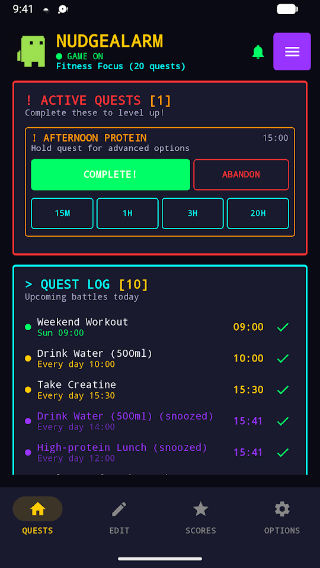
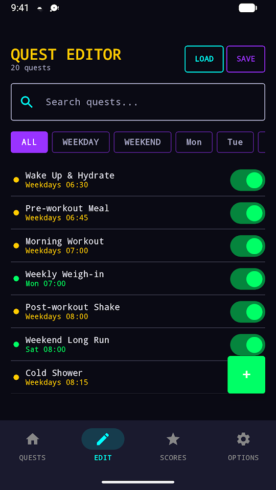
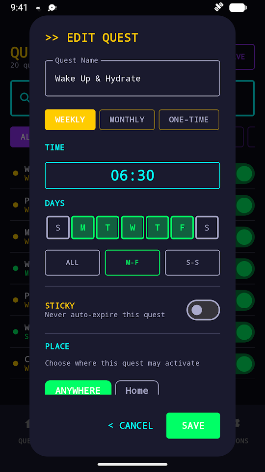
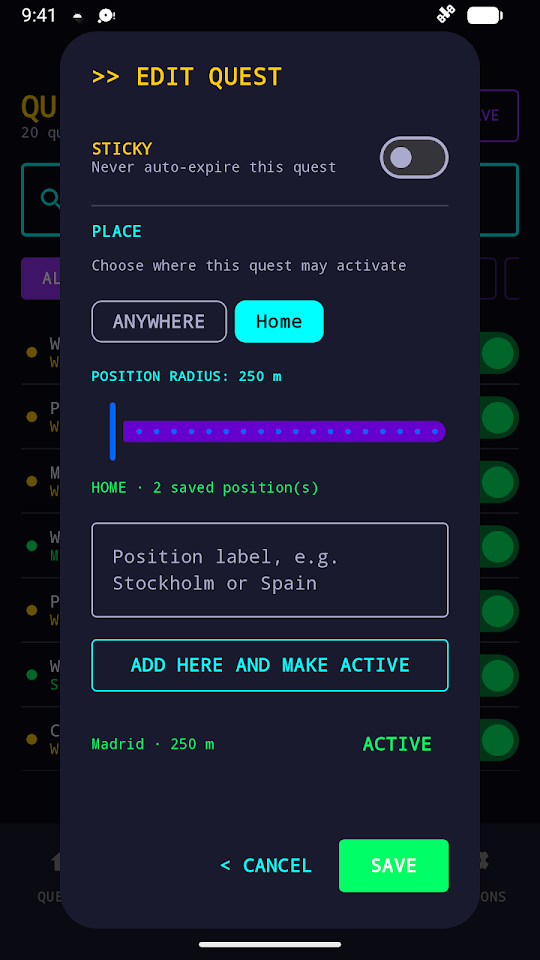
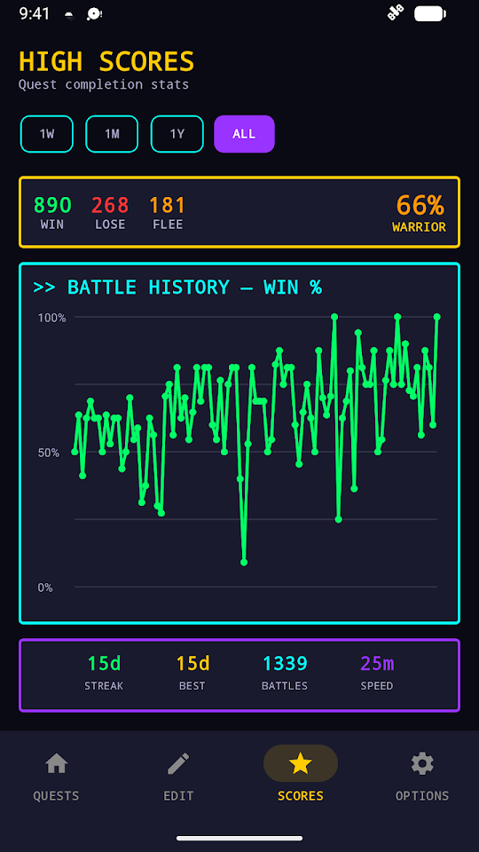

01
Keep nudging
Choose the interval, maximum number of nudges and sticky behavior for each quest. A task stays active until you decide what happens next.
FREE · NO ADS · OPEN SOURCE
One notification is easy to dismiss. NudgeAlarm can nudge you again and again—as often as every five minutes—until you complete, snooze or mute the task.

WATCH THE APP IN ACTION
Create and configure quests, snooze or mute interruptions, use reusable places, filter larger lists, review statistics, and export selected reminders for editing with an external AI.
01
Choose the interval, maximum number of nudges and sticky behavior for each quest. A task stays active until you decide what happens next.
02
Snooze one or many quests, temporarily mute alerts with Quiet Mode, choose sound and vibration, or link a quest to a saved place.
03
Search, filter and reorder quests. Use templates, keep separate setups, inspect completion statistics and export only the reminders you select.
MORE THAN A SINGLE ALARM




OPEN FORMAT, YOUR CHOICE OF AI
Export selected quests as readable YAML. Give that text to ChatGPT, Claude or another tool to rename, reorder, duplicate or generate reminders, then import it back. NudgeAlarm does not send your data to an AI service.
reminders:
- title: "Take an afternoon walk"
schedule: "0 15 * * 1-5"
nag_interval: 15
max_nags: 4
sticky: false
enabled: trueTIMING & ANDROID BACKGROUND LIMITS
NudgeAlarm checks for due quests about every five minutes, so a reminder may arrive a few minutes after its scheduled time rather than exactly on the minute. Android can also delay or stop background work depending on the phone and battery settings; exact delivery time cannot be guaranteed.
For the most reliable nagging, allow notifications, keep the persistent NudgeAlarm Active notification enabled, and set battery use to Unrestricted or disable battery optimization for the app.
ANDROID 12+
Use a reminder that keeps asking until you make a decision.